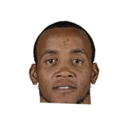

GSW coachMark Jackson on David Lee:
“I don't know what his role will be going forward. ... He put himself in position to inspire his team.”
Every quote from Mark Jackson about David Lee in the archive, newest first. Each one links to its original source.
GSW coachMark Jackson on David Lee:
“I don't know what his role will be going forward. ... He put himself in position to inspire his team.”
Rusty Simmons:Mark Jackson on David Lee:
“We can’t replace him. We know that. That’s the thing we have to know right away.”

Mark Jackson on Monta Ellis3 quotes